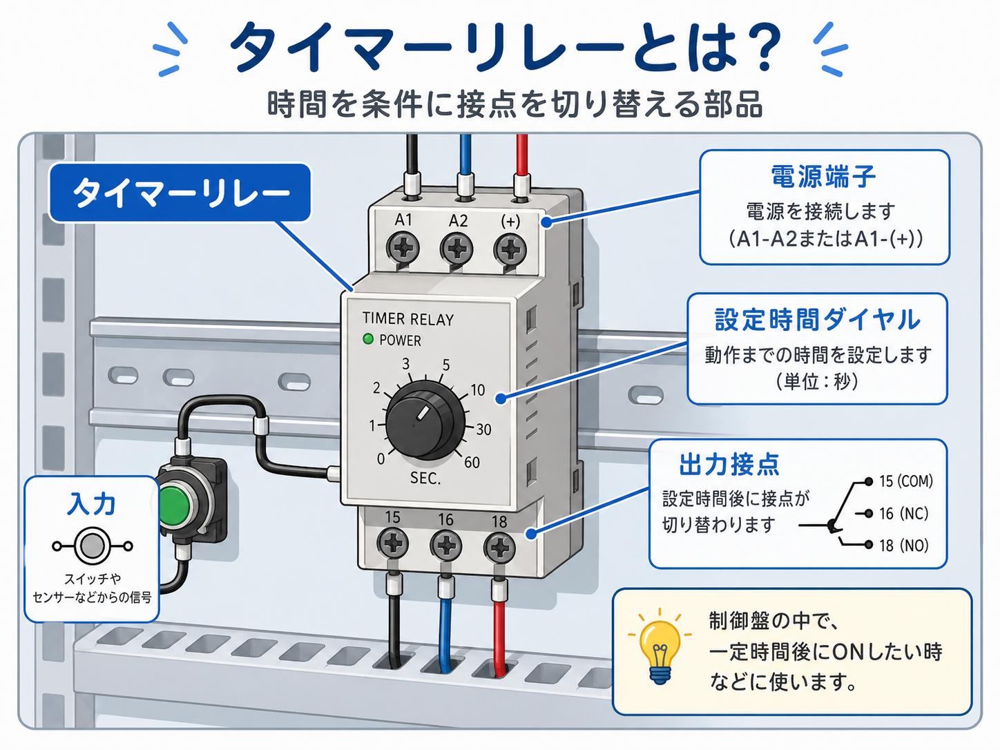
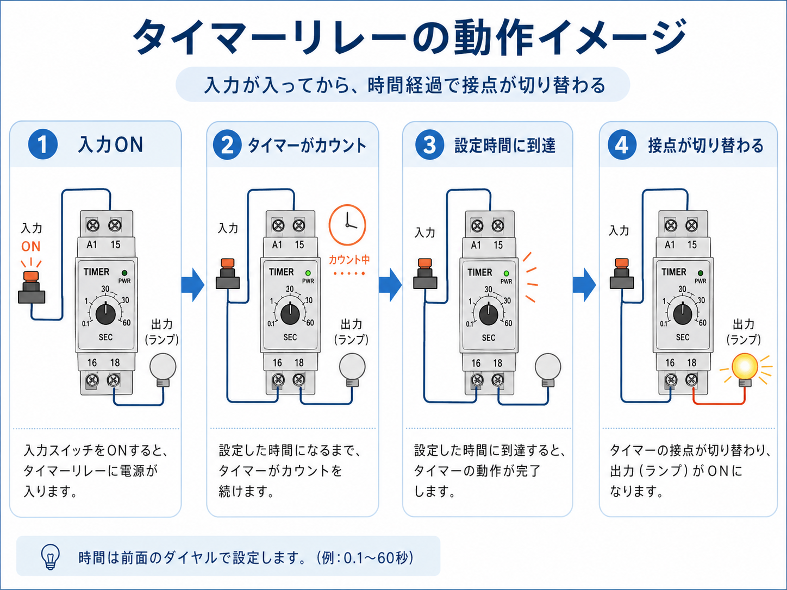
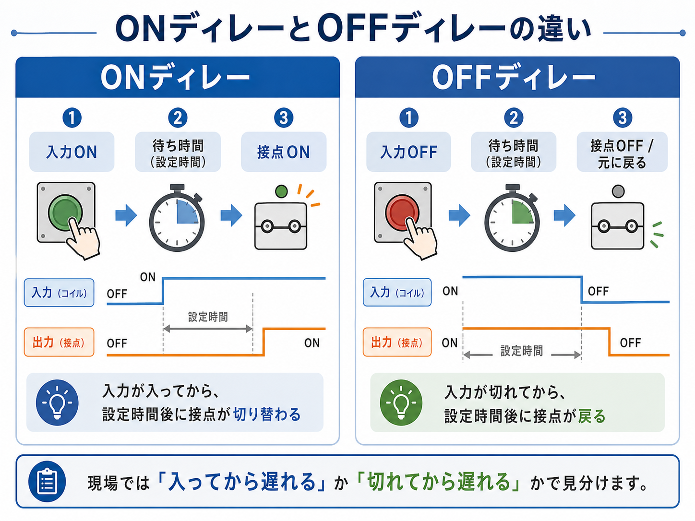

向いている人
- 制御盤の中にあるタイマーリレーを理解したい人
- ONディレー・OFFディレーの違いが混ざりやすい人
- ハード回路側のタイマーを現場目線で見たい人
タイマーリレーは、制御盤の中で時間を条件に接点を切り替えるハード回路用の部品です。 PLC内のソフトタイマーではなく、実物の端子・設定時間ダイヤル・出力接点を見ながら追う内容として整理します。
タイマーリレーは、制御盤の中で使う時間制御用のリレーです。 入力が入ってから一定時間後に接点を切り替えたり、入力が切れてから一定時間だけ状態を保ったりできます。
普通のリレーは、コイルに電気が入るとすぐ接点が切り替わります。 それに対してタイマーリレーは、コイルや入力条件が入ってから設定時間を数え、その後で接点を切り替えるのが特徴です。
GX Works3上で使うタイマー命令ではなく、制御盤に取り付ける実物のタイマーリレーとして説明します。 本体の電源端子、設定時間ダイヤル、出力接点、端子番号を見ながら追う内容です。

先輩タイマーリレーは、ざっくり言うと「時間を待ってから接点を切り替えるリレー」だよ。

新人PLCの中のタイマーではなく、盤の中に実物として付いている部品なんですね。

先輩そう。だから「入力が来ているか」「時間を数えているか」「接点が切り替わったか」を分けて見るのが大事だね。
タイマーリレーとは、時間を条件にして接点を切り替える部品です。 制御盤の中では、すぐに動かしたくない回路や、少し遅らせて停止させたい回路で使われます。
たとえば、スタート信号が入ってから5秒後にランプを点灯させたい。 停止信号が切れても、しばらくファンを回し続けたい。 こうした「少し待ってから動かす」「少し遅らせて戻す」場面で使います。

普通のリレーは、コイルに電気が入るとすぐ接点が切り替わります。 タイマーリレーは、その間に「設定時間」が入ります。
| 部品 | 基本の動き | 現場での見方 |
|---|---|---|
| リレー | コイルONで、すぐ接点が切り替わる | コイルが入っているか、接点が返っているかを見る |
| タイマーリレー | 入力後、設定時間を待ってから接点が切り替わる | 入力、カウント、接点切替を分けて見る |
タイマー本体のランプが点いていても、出力接点側の電源や配線に問題があれば負荷は動きません。 本体側と接点側を分けて確認するのが、トラブル対応ではかなり大事です。
基本の流れは、入力が入る、タイマーが時間を数える、設定時間に到達する、接点が切り替わる、という順番です。 いきなり端子番号を追うより、この流れで考えると理解しやすいです。

押しボタン、センサー、リレー接点、PLC出力などから条件が入り、タイマーリレーに電源や入力信号が入ります。
前面ダイヤルやレンジ設定に合わせて、設定時間を数えます。この間はまだ出力接点が切り替わっていない場合があります。
設定した時間に到達すると、タイマーリレー内部の動作が完了します。表示ランプ付きの機種では状態を見られます。
a接点側が閉じる、b接点側が開くなど、接点の状態が変わります。負荷が動くかは接点側の電源や配線も関係します。
タイマーの表示ランプが点いていても、接点側の配線ミス、負荷側電源なし、端子ゆるみがあると出力は動きません。 本体側と接点側を分けて確認します。
タイマーリレーで最初に混ざりやすいのが、ONディレーとOFFディレーです。 名前だけで覚えるよりも、「入ってから遅れる」のか「切れてから遅れる」のかで見ると整理しやすいです。

| 種類 | 動き方 | 現場での言い方 | 使い方の例 |
|---|---|---|---|
| ONディレー | 入力が入ってから、設定時間後に接点が切り替わる | 入ってから遅れる | 遅延起動、順番制御、一定時間後のランプ点灯 |
| OFFディレー | 入力が切れてから、設定時間後に接点が戻る | 切れてから遅れる | 遅延停止、ファンの残運転、警報保持 |
| その他の動作 | フリッカ、ワンショット、インターバルなど | 機種のモード設定で確認する | 点滅、一定時間だけON、繰り返し動作 |
図面や現物を見たときは、タイマーの種類名だけで判断せず、 入力がONした瞬間から遅れているのか、入力がOFFした瞬間から遅れているのかを確認すると間違えにくいです。

新人ONディレーとOFFディレー、名前だけ見るとよく混ざります。
先輩最初は「入ってから遅れる」「切れてから遅れる」で覚えるといいよ。現場ではこの見方の方が追いやすいことが多いね。
PLCのラダー内で使うタイマー命令も、一定時間を数えて接点を使うという意味では似ています。 ただし、今回のタイマーリレーは盤内に実物として付くハード部品です。
| 比較 | ハードタイマーリレー | PLCのソフトタイマー |
|---|---|---|
| 存在する場所 | 制御盤内の実物部品 | PLCプログラム内のタイマー命令 |
| 設定方法 | 本体ダイヤル、レンジ切替、モード設定など | GX Works3などで設定値を入力 |
| 確認方法 | 端子電圧、表示ランプ、接点導通、配線 | モニタ画面、デバイス値、ラダー状態 |
| 注意点 | 型式、電圧、接点容量、動作モードを確認 | 設定値、単位、完了接点、リセット条件を確認 |
A1/A2、15/16/18、COM/NO/NCのような端子番号が出てくる場合は、盤内の実物タイマーリレーを追う場面が多いです。 一方、T0やT10などのデバイス番号を追う場合は、PLC内のソフトタイマーとして見ることが多いです。
タイマーリレーは、古い設備やシンプルな制御盤、PLCを使わない小さな制御回路で今でも見かけます。 PLCがある設備でも、盤内の補助回路として使われていることがあります。
電源投入後、すぐに負荷を動かさず、数秒待ってから動かしたいときに使います。
停止信号後もしばらくファンやポンプを動かしたいときに使います。
1つ目の機器が動いてから、少し遅れて2つ目を動かすような回路に使います。
一瞬の異常信号をすぐ消さず、一定時間だけ表示やブザーを残したいときに使うことがあります。
モーター、ファン、ランプ、ブザー、電磁弁などを、すぐON/OFFさせずに少し時間をずらしたいときに使います。 設備の流れを整える部品として見ると分かりやすいです。
制御盤の中でタイマーリレーを見るときは、タイマー本体だけを見ても全体は分かりません。 何の条件で時間を数え始め、どの接点で何を動かしているかを順番に追います。
まずはタイマーリレー本体の電源電圧を確認します。 AC100V、AC200V、DC24Vなど、見た目が似ていても仕様が違うことがあります。
押しボタン、センサー、リレー接点、PLC出力など、何がタイマー開始条件になっているかを確認します。 入力条件が来ていなければ、タイマーは当然カウントしません。
ダイヤルの位置だけでなく、秒・分・時間などのレンジも確認します。 レンジ切替スイッチがある場合、ダイヤルの数字だけ見て判断すると間違えることがあります。
NO接点を使っているのか、NC接点を使っているのかを確認します。 図面上の接点番号と実物の端子番号を合わせて見ると、どの回路を切り替えているか追いやすくなります。
「タイマーが悪い」と決めつける前に、入力条件が来ているか、設定時間を数えているか、接点が切り替わっているか、負荷側に電源があるかを順番に見ると原因を絞りやすいです。
タイマーリレーまわりのトラブルでは、「時間後に動かない」「遅れて止まらない」「すぐ動いてしまう」「設定時間と違う」といった症状が出ます。 そのときは、タイマー本体だけでなく、入力条件・接点側・負荷側を分けて確認します。
A1/A2などに指定電圧が入っているか確認します。電圧仕様違いにも注意します。
押しボタン、センサー、前段リレー接点などがON/OFFしているか見ます。
ダイヤル位置、レンジ切替、秒・分の単位を確認します。
タイマー完了後にNO/NC接点が想定どおり変わるか確認します。
大きな負荷を直接入れていると接点不良や溶着につながることがあります。
タイマー本体が正常でも、端子のゆるみで不安定になることがあります。
新人タイマーが悪いと思って交換したけど直らない、みたいなこともありますか？
先輩あるよ。実際は入力条件が来ていない、接点側の電源がない、負荷側の配線が抜けている、ということもある。だから分けて見るのが大事だね。
タイマーリレーは見た目が似ていても、電源電圧、接点構成、動作モード、時間レンジ、端子配列が違うことがあります。 交換するときは、同じメーカー・同じ形に見えるだけで判断しない方が安全です。
| 確認項目 | 見る理由 |
|---|---|
| 電源電圧 | AC100V、AC200V、DC24Vなどが違うと動作しない、または故障につながります。 |
| 動作モード | ONディレー用なのか、OFFディレー用なのか、マルチタイマーなのかを確認します。 |
| 時間レンジ | 0.1〜60秒、1〜10分など、同じダイヤル数字でも単位が違うことがあります。 |
| 接点構成 | 1c、2c、NOのみ、NCありなど、使える接点が違う場合があります。 |
| 端子配列 | 古い機種と新しい機種で端子位置が違うと、差し替えだけでは使えないことがあります。 |
タイマー時間を少し変えるだけでも、搬送、エアシリンダ、モーター、警報、停止動作などに影響することがあります。 現場で変更する場合は、元の値を控え、設備の動き全体を確認してから調整します。
タイマーリレーは、制御盤の中で時間を条件に接点を切り替えるハード回路用の部品です。 PLCのソフトタイマーとは違い、実物の端子、設定ダイヤル、出力接点、電源仕様を見ながら確認します。
ONディレーは「入力が入ってから遅れる」、OFFディレーは「入力が切れてから遅れる」と考えると整理しやすいです。 トラブル時は、入力が来ているか、タイマーがカウントしているか、接点が切り替わっているか、負荷側が正常かを分けて見ます。
タイマーリレーは小さな部品ですが、設備の起動順序、停止タイミング、警報保持などに関わることがあります。 交換や設定変更をするときは、電圧・モード・時間レンジ・接点構成を確認し、元の状態を控えてから進めると安心です。